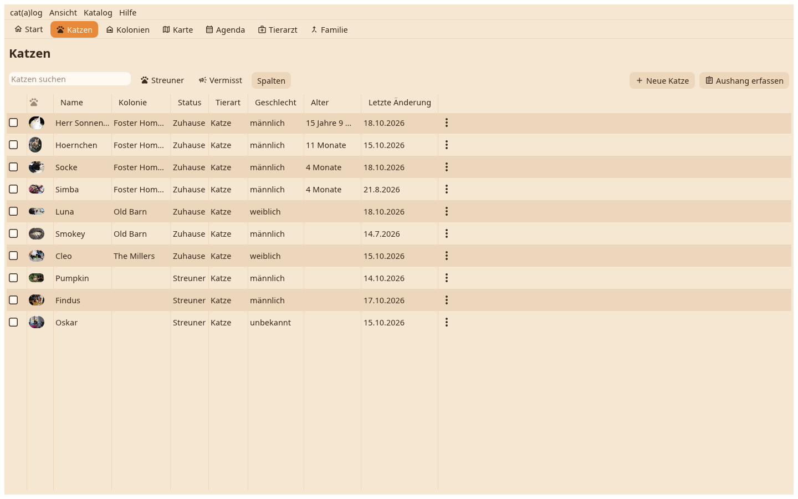

Jede Katze in einer Tabelle: eine Spalte pro Feld, das du wählst, sortierbar, durchsuchbar, mit den Filtern Streuner und Vermisst oben.

Spalten wählt die Felder, die erscheinen; die Wahl bleibt je Katalog. Ein Klick auf eine Überschrift sortiert, die Altersspalte zählt vom Geburtsdatum, die Spalte der letzten Änderung vom Protokoll. Die Suche filtert nach Name und Werten, während du tippst.
Ein Klick markiert eine Zeile, Strg und Umschalt markieren mehrere, die Pfeiltasten laufen, Enter öffnet die markierte Katze als Karte auf dem Schreibtisch. Das ⋮ an einer Zeile hat das Menü der Katze; ein Rechtsklick dasselbe.
Mit markierten Zeilen legt ein Haken sie alle auf den Schreibtisch, und das Markiert-Menü wirkt auf die Menge: alle auf dem Schreibtisch öffnen, in ein anderes Zuhause verschieben, in einen anderen Katalog, verstecken oder zeigen, exportieren, löschen.
Neue Katze fragt nach einem Namen, mit einem Vorschlag und einem Würfel für einen anderen, und legt die Katze im Zuhause an, in dem du bist. Aushang erfassen liest ein Plakat aus einer Bilddatei.